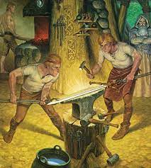

Os ferreiros aprendiam a trabalhar com seus mestres (ferreiros experientes), aprendiam passando de geração em geração ou nas corporações de ofícios. Atualmente existem algumas semelhanças com a forma de aprendizagem da idade moderna, pois ainda as pessoas que têm mais experiência ensinam os novatos a trabalhar, mas são pagos para isso. Ainda existe o trabalho que é passado de geração em geração, mas na idade moderna era muito mais recorrente. Atualmente não existem mais corporações de ofícios, mas existem instituições que ensinam sobre a profissão na qual você quer se especializar e os sindicatos, que representam os interesses dos trabalhadores de determinada profissão. Na idade moderna, existiam ferreiros que se especializavam na produção de um único artefato/item, como por exemplo armaduras, espadas ou escudos. Já outros aprendiam sobre como forjar várias itens/artefatos, mas não possuim a mesma qualidade de quem se especializava na produção de um produto exclusivamente. No mercado de trabalho contemporâneo, as pessoas começaram a se especializar em apenas uma área de trabalho, ainda existem pessoas que se especializam em mais de uma área, porém, geralmente são áreas afins. Atualmente existem vários requisitos que na idade moderna não existiam, por exemplo, na idade contemporânea é necessário estudar vários anos, ter certificados, entre outros. Já na idade moderna só era necessário saber como forjar os itens que você gostaria de produzir. Na Idade moderna os ferreiros tinham alguns desafios, como por exemplo a falta de recursos e a concorrência disputada com os outros ferreiros. Em resumo, existem várias semelhanças entre algumas profissões, seus métodos de ensino e aprendizagem com os ferreiros da idade moderna. Porém, também, ocorreram diversas mudanças, como o fato de que os trabalhos eram muito mais pesados e exigiam mais força. Já os trabalhos atuais requerem mais estudo, técnica e, muitas vezes, máquinas para a produção. Na idade moderna os ferreiros criavam espadas, armaduras e escudos, hoje em dia existem profissionais, em empresas, que criam armas, aviões, bombas, entre outros. Isso mostra que os trabalhos conservam algumas semelhanças, mas mudaram devido as evoluções tecnológicas. No mercado de trabalho contemporâneo existem disputas para conseguir vagas de emprego e essas concorrências existiam entre os ferreiros. Atualmente a falta de estudo dificulta a busca do emprego, mas na idade moderna a falta de recursos (que eram mais difíceis de conseguir) dificultava a produção, sendo um obstáculo para a função de ferreiro.
Ferreiros da idade Moderna e o mercado de trabalho contemporâneo!
Com o passar do tempo o mundo vai mudando, uma profissão (ferreiro) que antes era de extrema importância, hoje não existe mais. Isso se deve ao fato de que hoje existem outras profissões com algumas funções parecidas, também porque não utilizamos mais muitos dos utensílios que antes eram de grande importância, por exemplo espadas, armaduras ou escudos.
